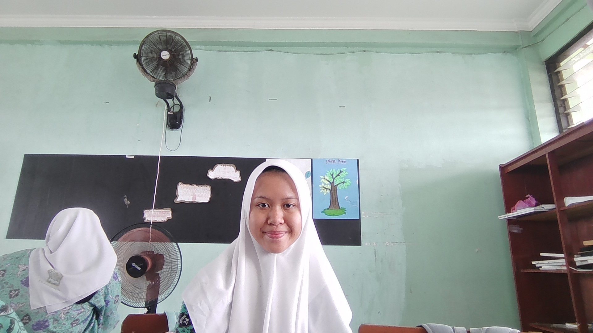
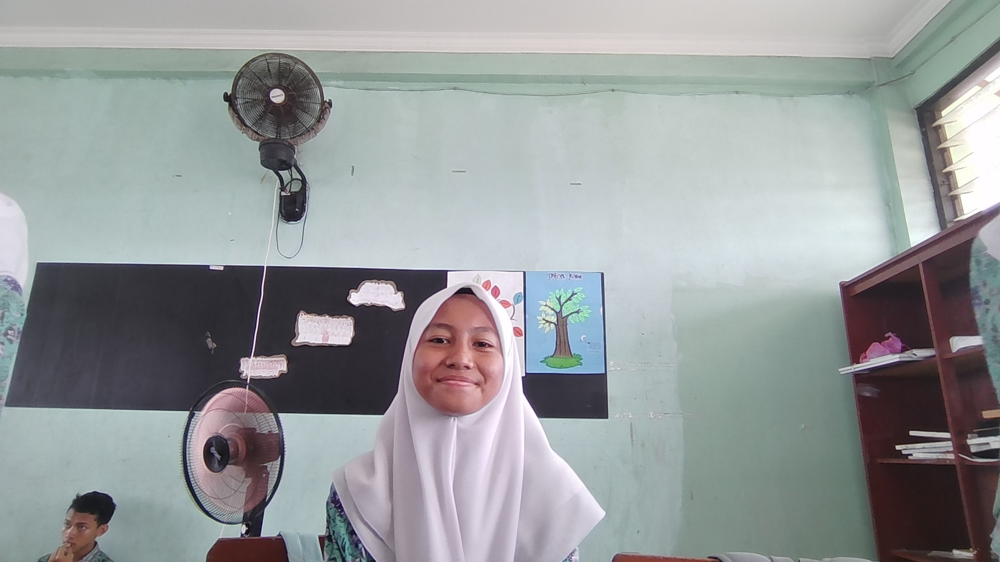
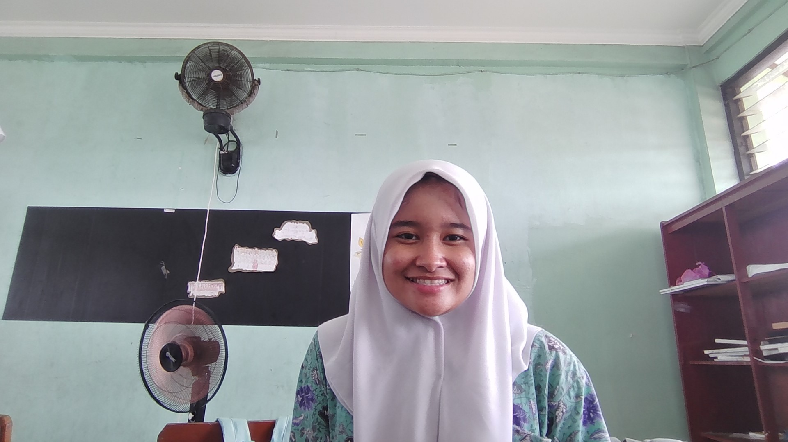
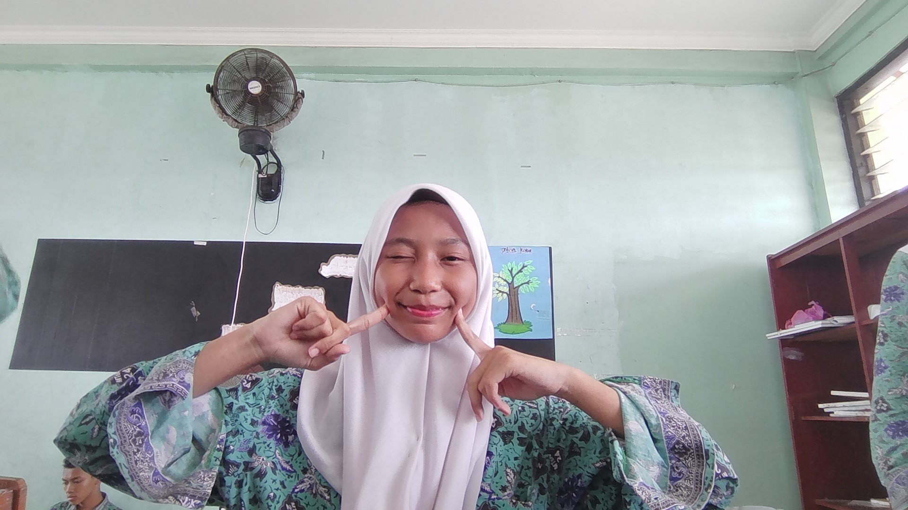
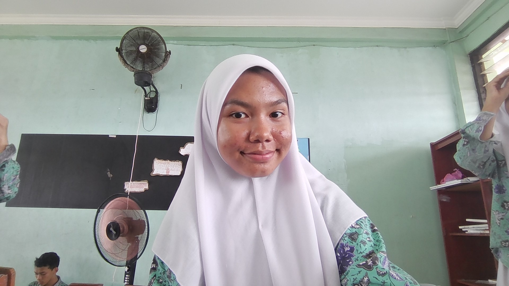
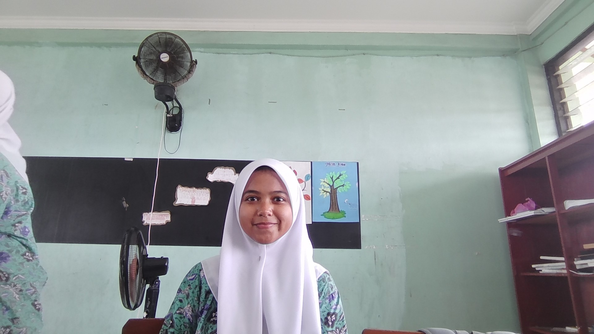
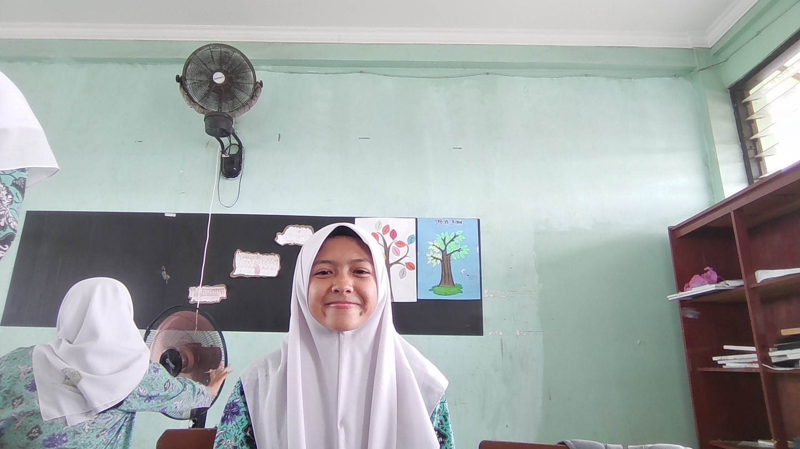
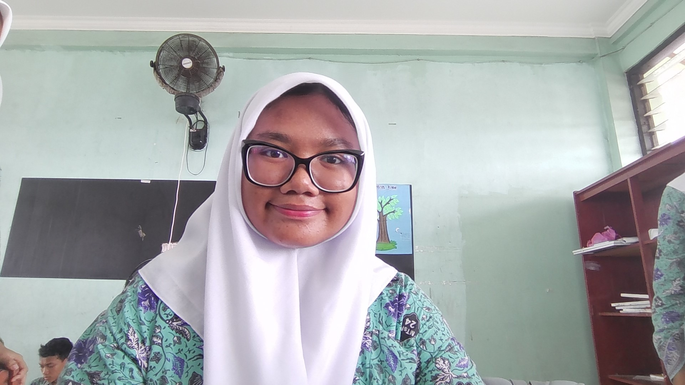
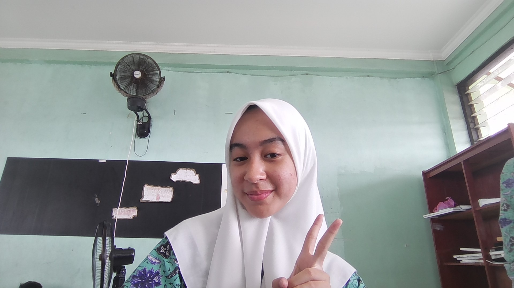

FOTO KELOMPOK 2 KEREN
Kelompok 2 adalah kelompok kelas 9.9 di pelajaran Informatika yang diajarkan oleh Pak Ferdiansyah. Kelompok ini berisi 9 orang yaitu Aurell, Jasmine, Kalilah, Nabila, Reina, Pragisha, Eliska, Sitti, dan Syifa. Dan orang paling iseng adalah Sitti, dan juga paling ngeselin sedunia. Tapi kelompok 2 itu orang nya sangat asik-asik, rajin-rajin, cantik-cantik, dan juga anak baik semua dan tidak malas kalau mengerjakan tugas pak Ferdiansyah.
BIOGRAFI KELOMPOK 2
BIOGRAAFI NABILA
Nabila lahir di Bekasi, 28 Agustus 2009, Nama lengkapnya adalah Nabila mumtaz albina , Ia mempunyai Hobi mendengarkan musik , makanan favorit nya adalah nasi goreng, Dia anak kedua dari 3 bersaudara.
BIOGRAFI AUREL
Aurell lahir di Bekasi, 04 April 2010, Nama lengkapnya adalah Aurellie Gunawan , Ia mempunyai Hobi Olahraga , makanan favorit nya adalah mie goreng, Dia anak pertama dari 3 bersaudara.
BIOGRAFI ELISKA
ELISKA lahir di magelang, 2 september 2009, Nama lengkapnya adalah Eliska Khansa Tsabita , Ia mempunyai Hobi mendengarkan musik , makanan favorit nya adalah masakan mama, Dia anak kedua dari 3 bersaudara.
BIOGRAFI JASMINE
JASMINE lahir di Bekasi, 11 januari 2010, Nama lengkapnya adalah Jasmine Aura Senja , Ia mempunyai Hobi Menyanyi , makanan favorit nya adalah pecel lele, Dia anak kedua dari 3 bersaudara.
BIOGRAFI KALILAH
Kalilah lahir di Bekasi, 01 Mei 2010, Nama lengkapnya adalah Kalilah Athari Hanania , Ia mempunyai Hobi Bermain Badminton , makanan favorit nya adalah Pizza, Dia anak tunggal.
BIOGRAFI PRAGISHA
PRAGISHA lahir di Bekasi, 25 mei 2010, Nama lengkapnya adalah Pragisha Diara Tamar , Ia mempunyai Hobi mendengarkan musik , makanan favorit nya adalah nasi goreng, Dia anak kedua dari 2 bersaudara.
BIOGRAFI REINA
Reina lahir di Jakarta, 12 Februari 2010, Nama lengkapnya adalah Reina Hilwa Mustaula , Ia mempunyai Hobi Olahraga , makanan favorit nya adalah udang, Dia anak pertama dari 2 bersaudara.
BIOGRAFI SITTI
Sitti lahir di Jakarta, 16 September 2010, Nama lengkapnya adalah Sitti Rizqi Ahsani Hasibuan , Ia mempunyai Hobi mendengar music , makanan favorit nya adalah sate ayam, Dia anak kedua dari 2 bersaudara.
BIOGRAFI SYIFA
Syifa lahir di Bekasi, 02 oktober 2009, Nama lengkapnya adalah Syifa Layla Bafagih , Ia mempunyai Hobi membaca , makanan favorit nya adalah sushi, Dia anak kedua dari 3 bersaudara.